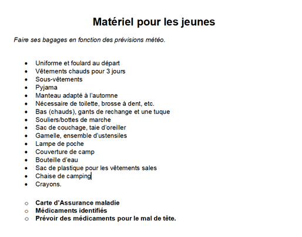

Octobre 2022
Samedi 15 10 h-15 h : Rendez-vous à la maison du citoyen s'il vous manque des badges. 12090 rue Notre-Dame, dans la salle du fond où la montée à eu lieux.
Jeudi 20 : Les animateurs auraient besoin de 6-7 Pions pour passer des pamphlets pour la ville. Cela se passera durant la réunion.

Fin de semaine du 22 et 23 : Montage de la maison hantée ! On va avoir besoin de beaucoup de main donc n'hésiter pas à venir. Les heures sont de 9h-16h, vous êtes pas obligé d'être là 100% du temps, mais plus on est, plus on a de chance de finir tôt!
Samedi 29 : La ville nous offre un Stand pour promouvoir notre belle maison hantée ! Il faut pas manquer ça!
lundi 31 : MAISON HANTÉE!! WOOOOOOO!! Rendez-vous à 18h pour notre belle maison hantée style VHS et vieux films. Une longue soirée nous attends mais une bonne longue soirée.
Novembre 2022
Fin de semaine 11-12-13 : C'est le camp d'automne. On se prépare un peu d'avance pour ne pas arriver à la dernière minute et avoir à se dépêcher à 1000 à l'heure. Ça vas se passer à Saint-Alphonse-Rodriguez pis le coucher vas ce faire dans un chalet donc pas besoin d'avoir peur de la pluie ou du mauvais temps. La liste de matériel est juste à côté donc aucun oublie n'est permis.
Dimanche 20 : Enfin! L'autre grosse collecte de fond. La collecte de bouteille ! Les heures, c'est comme presque tous les autres événements : de 9h-16h. Même principe que la maison hantée, plus il y a de pion présent, plus on va avoir de cash à la fin!
Décembre 2022
Samedi 3 : L'annuel souper spaghetti revient cette année pour célébrer le 82eme anniversaire du groupe. Ça va se passer dans la grande salle commune du centre Roussin. Les places sont limitées donc réserver maintenant pour vous, vos ami(e)s, vos parents au coùt de 15$ par jeunes et de 20$ par adultes.
Février 2023
Fin de semaine 10-11-12 : Déja le camp d'hiver. La première neige est arrivée durant le camp de promesse donc on le voyait déja venir. Ce camp marque aussi à peu près la moitié de l'année. Parce qu'on a voté pour un camp léger itinérant, il faut se préparer mentalement à construire des abris rapidement et de façon éfficasse pour pouvoir dormir au chaud.
À un moment donné ce mois : Vente de chocolat en tout genre, plus d'info suivront.
Mars 2023
Samedi 18 : Comme à chaque année, la game de quille vas se faire. C'est un peu loin donc plus d'info arriverons plus tard. Ce qui est sûr, c'est que ça va se passer au Salon De Quilles Bellevue St Georges au 12980 Notre-Dame St. East, Pointe-aux-Trembles, Quebec H1A 1R9 proche du CHSLD Le Cardinal.
Avril 2023
Dimanche 16 : Deuxième collecte de bouteille, Même affaire que la première, mais juste une deuxième fois
Samedi 29 : Soirée Jeux, je sais pas vraiment ce qui a été prévue, mais juste avec le nom, ça me rend tout excité comme un enfant.
Juillet 2023
16 jusqu'au 22 : Le camp d'été!! En plus, celui-là est hyper spécial parce que ça va être un camp de groupe! Je peux quasi pas soutenir mon excitation tellement je voulais en faire un depuis la batch à Dezi. Plus d'info suivront quand plus d'info il y aura. pour l'instant, je peux dire que ça va ce passer à notre très cher domaine scout st-Louis de France.
Blog Post
Wow! Je pensais jamais que j'allais faire un blog dans ma vie. Mais bon. Here we are! Je sais pas comment ça marche. J'imagine que je fais juste dire ce qu'il me passe par la tête, mais vue que je suis le secrétaire, j'imagine que je fais juste dire ce qu'il c'est passer chaque semaine plus chaques activités genre la vente de calendrier, le montage de la maison hantée et autre. Bon, je me souviens pas de rien de ce qu'il s'est passé durant la vente de calendrier donc malheureusement, je peux pas vraiment rien dire sur ça.
Montage de la maison hantée. Wow. Je suis vraiment impressionné de comment ça a avancé la gang, il reste quelques petits trucs à finir, c'est sur, mais on va pouvoir les finirs durant la réu. Je vais mettre les photos de notre avancement durant la fin de semaine sur le facebook dès que je peux les prendres.
Soirée de l'Halloween. WOW!! 662 PERSONNES! UN NOUVEAU RECORD Wooooooooooooo!! Bon, pour revenir un peu sérieux, bravo la gang, cette année la maison hantée était hyper bonne. Je peux pas rien dire pour les autres participants, mais je peux dire la salle préférée de ma mère, elle a hésité, mais a fini par dire que Poltergeist était celle qu'elle aimait le plus. C'est comprenable, elle était hyper belle. Même si c'est sa salle préférée, toutes les autres salles était hyper belle et bien faites. Je sais que je me répète, mais je suis obligé de le dire: Bravo!
Jeudi le 3 novembre. Bon, dans tout VCPREF, il y a deux partis plate. Le P et le E. Là, on était rendu au E. Voici la liste des éléments soulevés pendant la réu.
- Ne pas Ouvrir les portes avant l'heure de départ.
- S'assurer que tout le monde qui se dit présent soit là avant que la maison hantée commence.
- S'assurer d'une bonne visibilité dehors.
- Avoir plus de Duck Tape.
- Mieux prévoir la musique et les speakers.
- Avoir fini toutes les préparations pour la maison hantée avant le jour J.
- #OnEstTropFort
- Avoir un Personnage iconique en rapport avec le theme a l'extérieur pour que le monde qui attende puissent savoir ce qui les attends.
- Prévoir moins de personnage par salles. Je vais pas nomer de salle mais il y en avait une qui avait prévu pour 6 personnes dans leur salle sur les 15 Pion.
- Mieux décorer les salles de transition (escalier, maîtrise, l'avant) pour ne pas avoir juste des bâches ou quelques toiles d'araignées.
- Plus de machine à Fumée